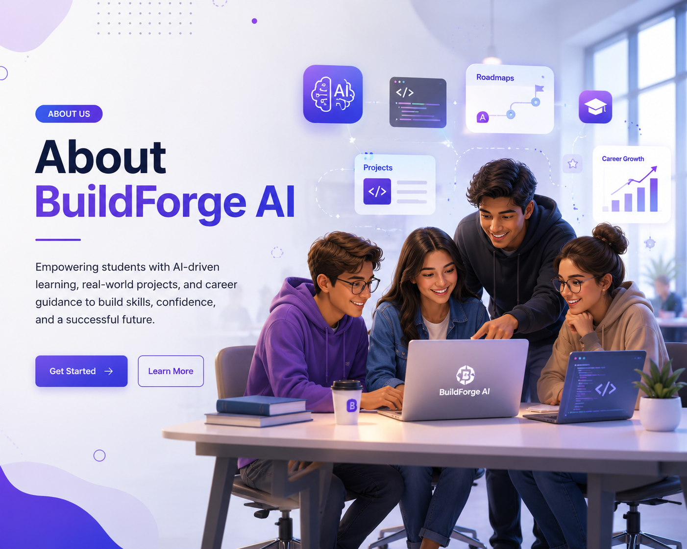
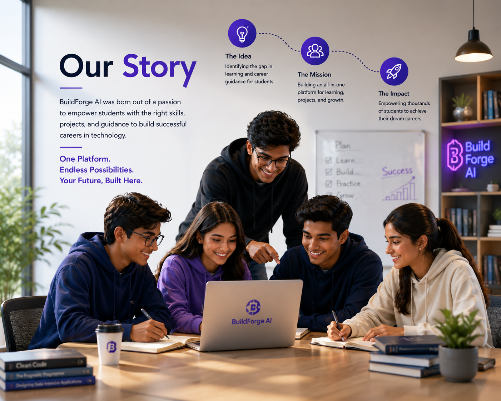
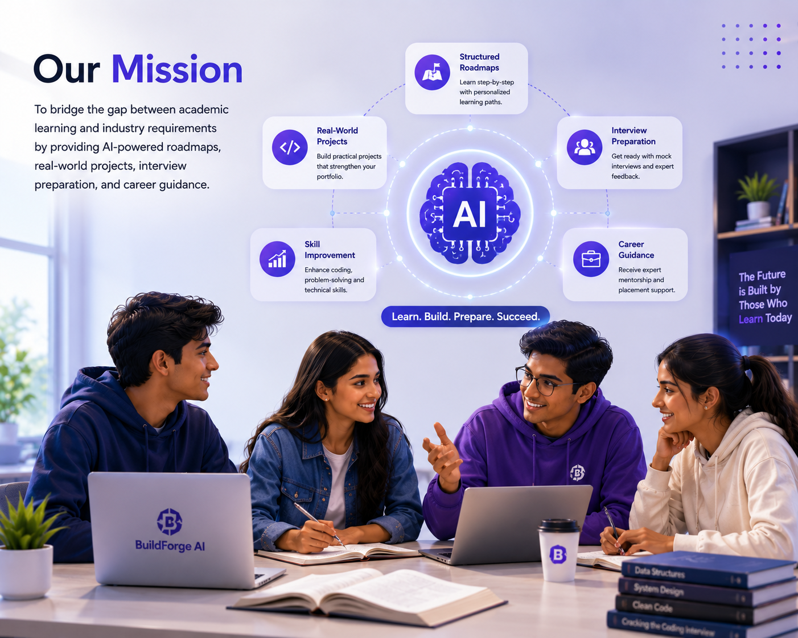
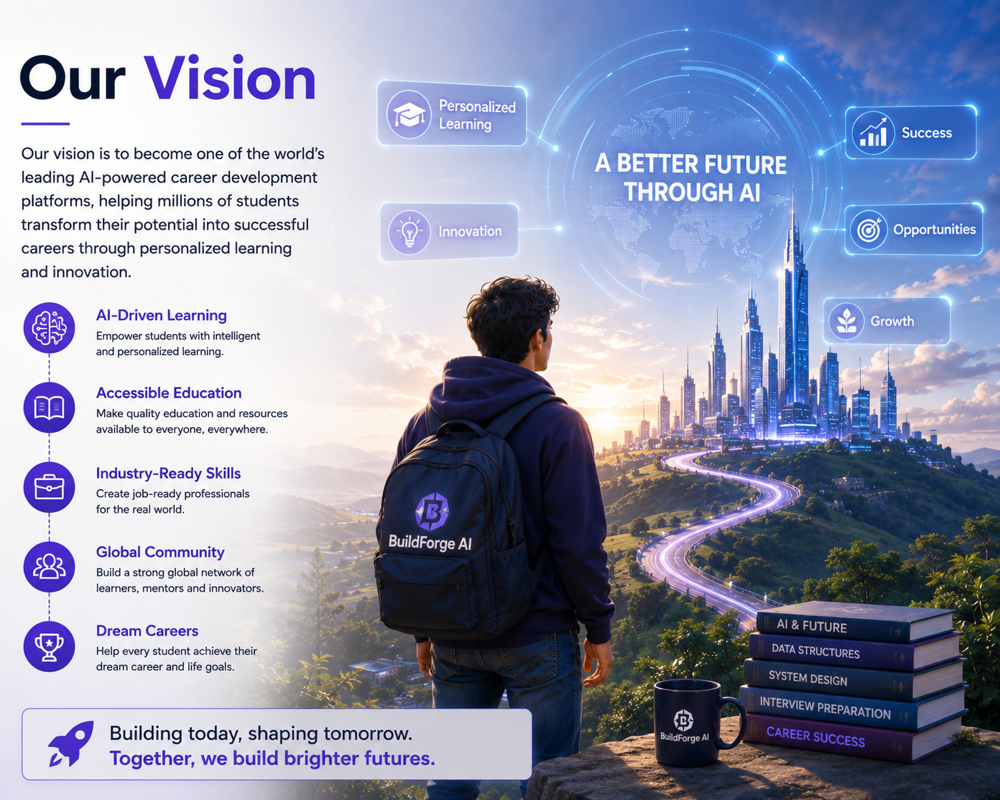
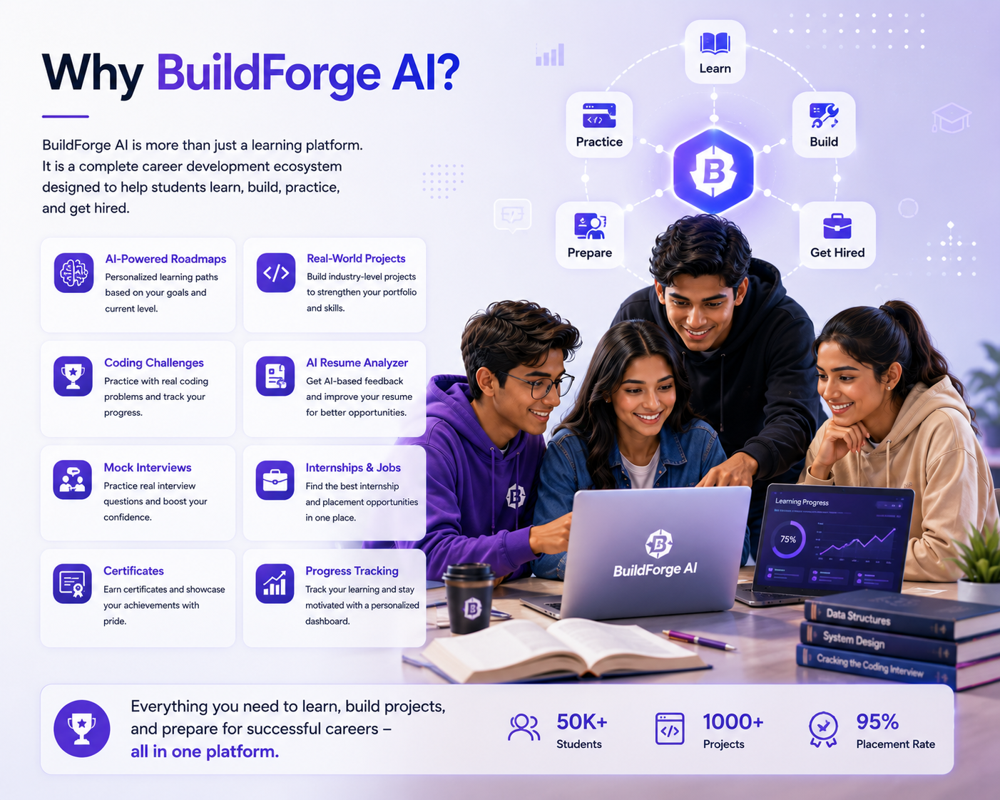
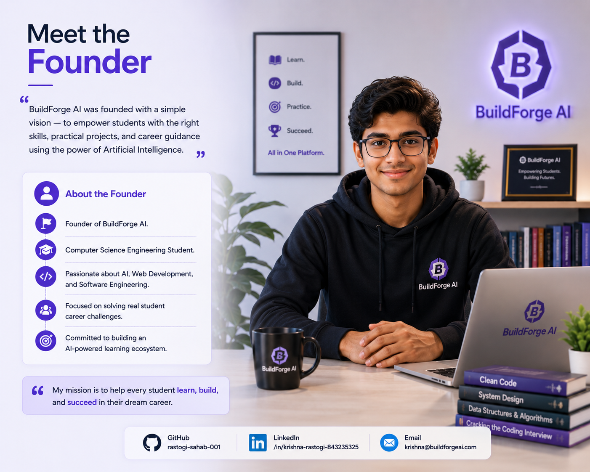
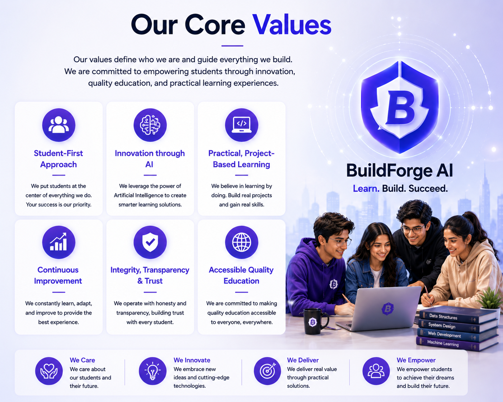
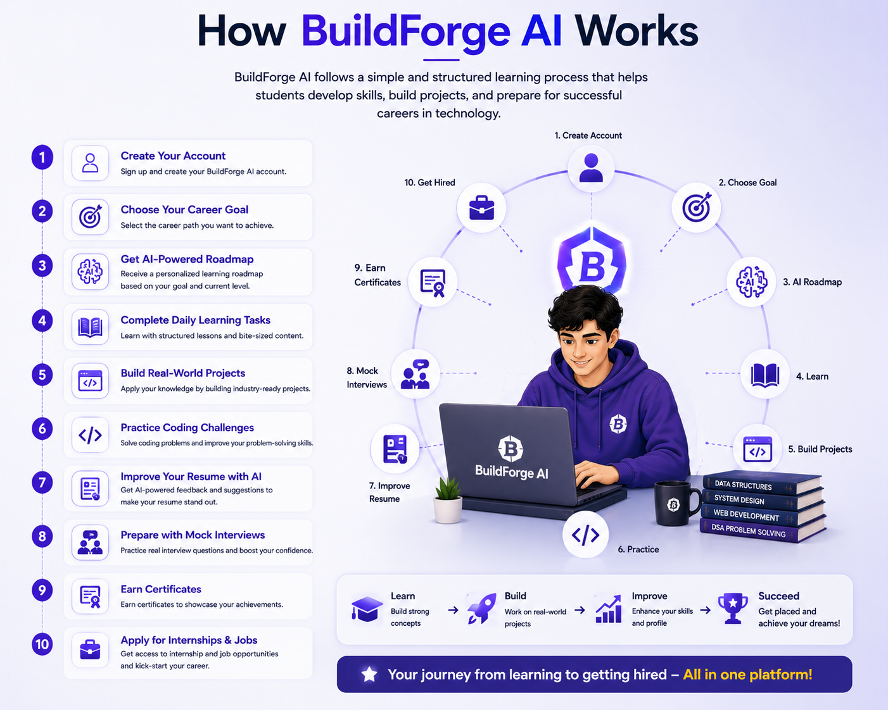
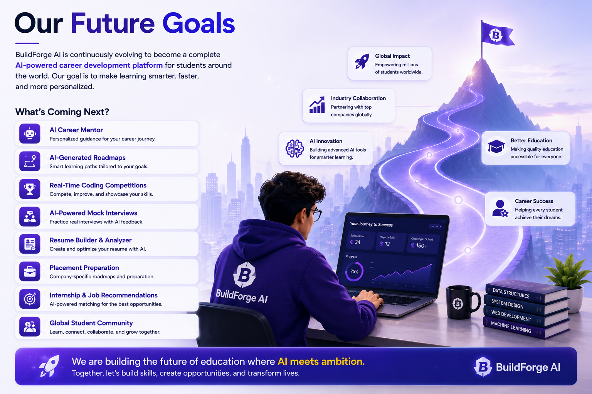
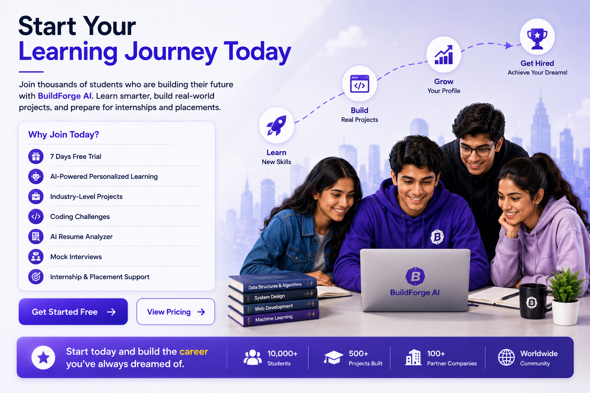

BuildForge AI is an AI-powered career development platform
designed to help students learn in-demand skills,
build real-world projects, prepare for internships,
and achieve successful placements.

Empowering students to transform ideas into successful careers.
Our Story
BuildForge AI was created with a simple vision:
to help students learn practical skills, build
impressive projects, and prepare for successful
internships and placements through one unified platform.
Many students struggle to find the right roadmap,
hands-on projects, and career guidance.
BuildForge AI brings everything together in one place,
making learning structured, practical, and career-focused.

Our journey started with a mission to simplify learning
and career preparation for every student.
Our Mission
Our mission is to bridge the gap between academic learning
and industry requirements by providing students with
AI-powered roadmaps, real-world projects, interview
preparation, and career guidance.
What We Aim to Achieve
Provide structured learning roadmaps.
Help students build industry-level projects.
Improve coding and interview skills.
Prepare students for internships and placements.
Build confidence through practical learning.

Our mission is to help every student learn smarter,
build better, and get hired faster.
Our Vision
Our vision is to become one of the world's leading AI-powered
career development platforms, helping millions of students
transform their potential into successful careers through
personalized learning and innovation.
Our Long-Term Vision
Empower students with AI-driven learning experiences.
Make quality education accessible to everyone.
Build industry-ready professionals.
Create a global learning community.
Help students achieve their dream careers.

Our vision is to shape the future of education with
artificial intelligence and innovation.
Why BuildForge AI?
BuildForge AI is more than just a learning platform.
It is a complete career development ecosystem designed
to help students learn, build, practice, and get hired.
Why Students Choose BuildForge AI
AI-powered personalized learning roadmaps.
Industry-level real-world projects.
Coding challenges with practical practice.
AI Resume Analyzer for resume improvement.
Mock interviews for placement preparation.
Internship and job opportunities.
Certificates to showcase achievements.
Progress tracking with personalized dashboard.

Everything students need to learn, build projects,
and prepare for successful careers—all in one platform.
Meet the Founder
BuildForge AI was founded by Krishna Rastogi,
a Computer Science student with a vision to help
students learn practical skills, build industry-ready
projects, and achieve successful careers using
Artificial Intelligence.
About the Founder
Founder of BuildForge AI.
Computer Science Engineering Student.
Passionate about AI, Web Development, and Software Engineering.
Focused on solving real student career challenges.
Committed to building an AI-powered learning ecosystem.

Krishna Rastogi — Founder of BuildForge AI.
Our Core Values
Our values define who we are and guide everything we build.
We are committed to empowering students through innovation,
quality education, and practical learning experiences.
What We Believe In
Student-first approach.
Innovation through Artificial Intelligence.
Practical, project-based learning.
Continuous improvement and growth.
Integrity, transparency, and trust.
Making quality education accessible.

Our values inspire us to build a better learning
experience for every student.
How BuildForge AI Works
BuildForge AI follows a simple and structured learning
process that helps students develop skills, build projects,
and prepare for successful careers in technology.
Our Learning Process
Create your BuildForge AI account.
Choose your career goal.
Receive an AI-powered personalized roadmap.
Complete daily learning tasks.
Build real-world projects.
Practice coding challenges.
Improve your resume with AI.
Prepare with mock interviews.
Earn certificates.
Apply for internships and jobs.

A step-by-step journey from learning to getting hired.
Our Future Goals
BuildForge AI is continuously evolving to become a complete
AI-powered career development platform for students around
the world. Our goal is to make learning smarter, faster,
and more personalized.
What's Coming Next?
AI Career Mentor for personalized guidance.
AI-generated learning roadmaps.
Real-time coding competitions.
AI-powered mock interviews.
Resume Builder and Resume Analyzer.
Placement preparation with company-specific roadmaps.
Internship and job recommendation system.
Global student learning community.

Building the future of AI-powered education and career success.
Start Your Learning Journey Today
Join thousands of students who are building
their future with BuildForge AI.
Learn smarter, build real-world projects,
and prepare for internships and placements.
Why Join Today?
7 Days Free Trial.
AI-Powered Personalized Learning.
Industry-Level Projects.
Coding Challenges.
AI Resume Analyzer.
Mock Interviews.
Internship & Placement Support.

Start today and build the career you've always dreamed of.